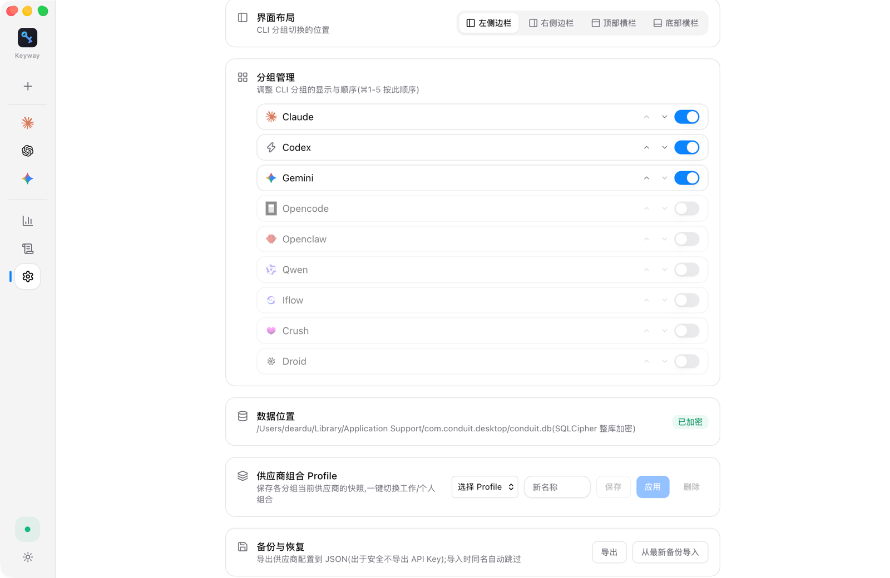
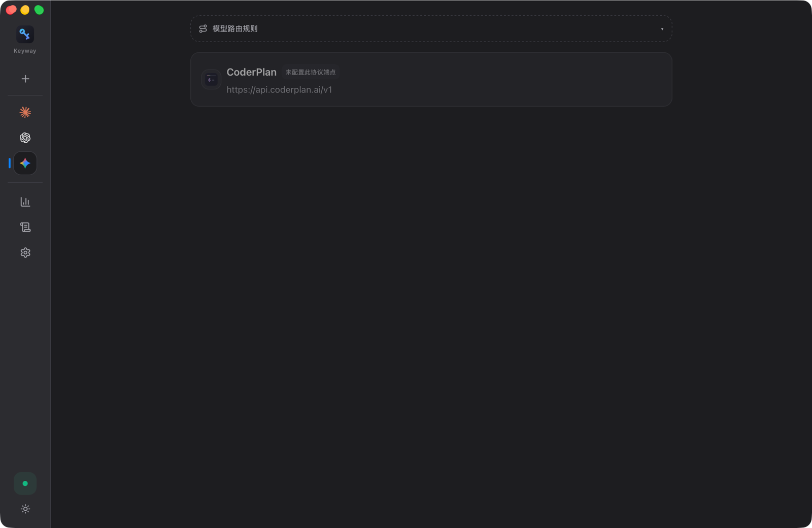

一个应用,管好你的每一个 AI CLI。供应商、密钥、用量,尽在掌握。

每一项能力,都为你的日常而生。
切换供应商,下一个请求立即生效。Codex、Gemini 与 Claude 一致体验,终端不必重开。
API Key 存入系统钥匙串,配置整库加密。不落盘、不上传,数据只属于你。
每一次转发都在计量。每个供应商用了多少 token,一眼看清。
接管、转发、切换,一气呵成。
从密钥安全到请求观测,Keyway 是 AI CLI 的本地网关。
上游 5xx 或超时自动切换到备用供应商,长任务不再因单点故障中断。可配置候选链。
让特定模型走特定供应商:如 claude-* 官方、deepseek-* 中转,按模型名自动分发。
最近 100 条请求逐条可见:供应商、模型、上下行 token、状态码与耗时,排障一目了然。
按 CLI、按供应商汇总 token 用量与请求成功率,谁稳定、谁费钱,数据说话。
工作 / 个人 / 测试多套供应商组合一键快照保存、随时切换,互不干扰。
供应商配置一键导出 JSON(不含密钥),换机、分享预设不发愁。兼容 9 大 CLI 配置导入。
SQLCipher 整库加密 + 系统钥匙串,密钥从不明文落盘;导出备份也不包含密钥。
每个供应商一键测试连通性与延迟,切换前心里有数。
三步向导选 CLI、加供应商、一键接管;菜单栏常驻,随时秒切、查看主界面。
或从现有 CLI 配置一键导入。GLM、Kimi、官方、任意中转,皆可。
原配置自动备份,随时还原,进退自如。
正在运行的 claude / codex 会话,下一个请求即生效。

Keyway 在本机运行一个轻量代理(127.0.0.1:9527),接管各 CLI 的 API 地址后,所有请求经它转发到你选定的供应商。切换供应商只改本地状态,不重写 CLI 配置,所以无需重启终端。
安全。密钥存于 SQLCipher 整库加密的本地数据库与系统钥匙串,绝不明文落盘、绝不上传;导出的备份文件也不包含密钥。
Claude Code、Codex CLI、Gemini CLI、OpenCode、OpenClaw 等 9 大 CLI 工具,覆盖 Anthropic / OpenAI / Gemini 三种协议,供应商可按协议复用。
不需要。代理按当前供应商实时转发,下一个请求即生效 —— 正在跑的 claude / codex 会话无感切换。
可以。模型路由规则让不同模型走不同供应商;故障转移在上游出错时自动切到备用;多配置档案可整组切换工作 / 个人环境。
一键还原。接管 CLI 时原配置已自动备份,Keyway 随时可以完整交还,不留任何残留。
Keyway 完全免费且开源(MIT)。你只需为自己使用的模型供应商付费。
* 所有数据(供应商配置、密钥引用、用量记录)仅存储于本机加密数据库,不上传任何服务器。
** Claude Code、Codex、Gemini CLI、OpenCode、OpenClaw 分别为各自所有者的产品;Keyway 与 Anthropic、OpenAI、Google 无关联。